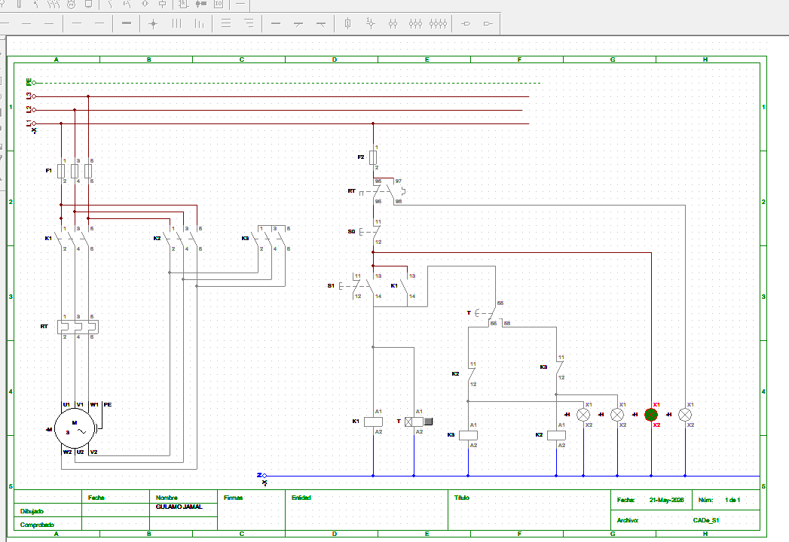
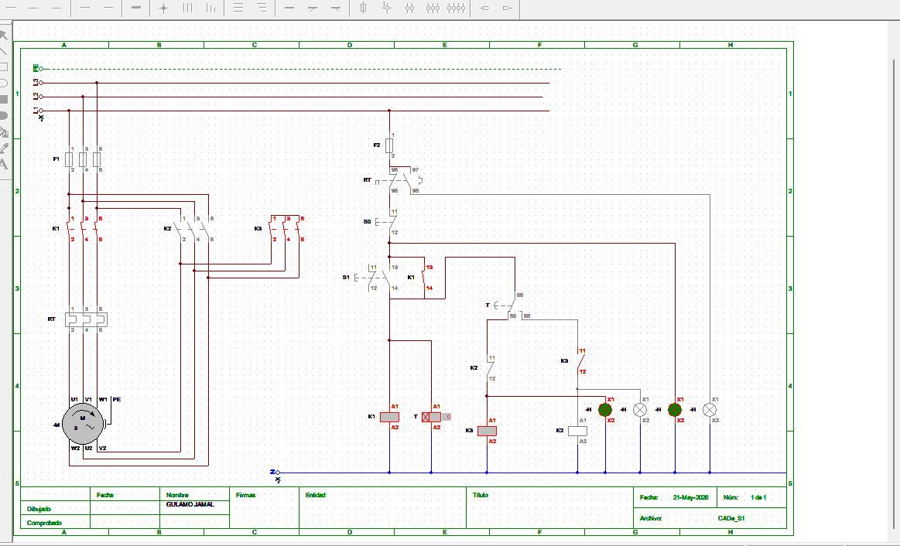
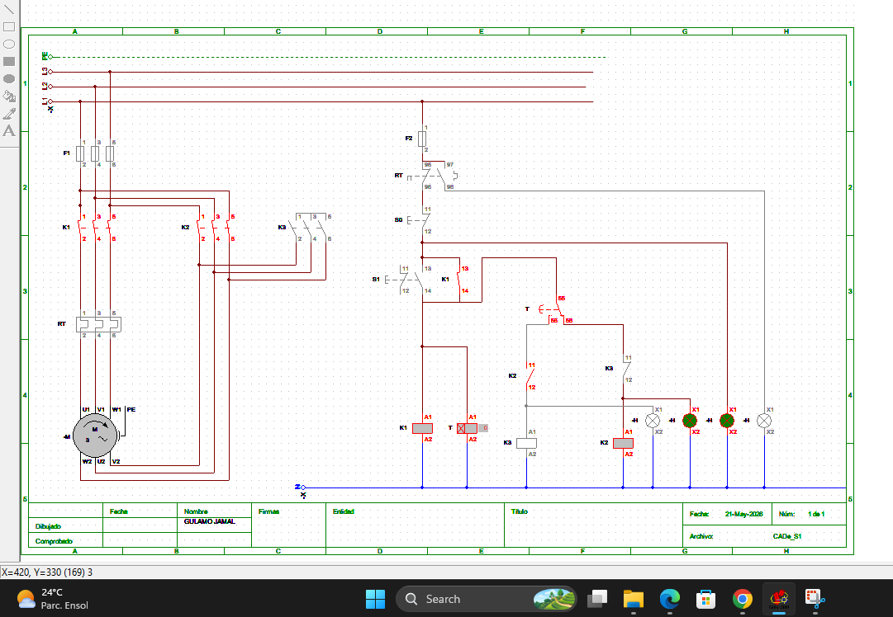
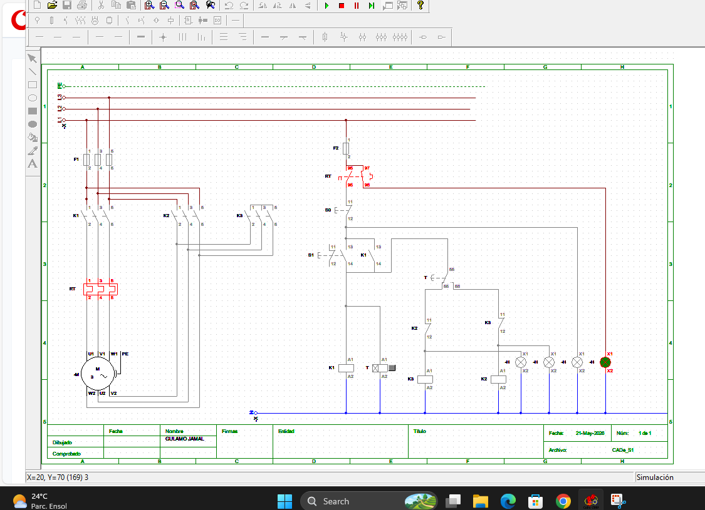

Partida Estrela-Triângulo
Comando e potência para partida estrela-triângulo de motor trifásico. O motor arranca em estrela e, após temporização, transfere automaticamente para triângulo.
Funcionamento
- Pressionar START
- O contactor principal K1 energiza
- O contactor estrela K3 energiza
- O motor arranca em estrela
- O temporizador inicia a contagem
- Após aproximadamente 10 segundos: K3 desliga, K2 liga
- O motor passa a operar em triângulo
Componentes
- K1 → Contactor principal
- K2 → Contactor triângulo
- K3 → Contactor estrela
- RT → Relé térmico
- T → Temporizador
- S0 → Botão STOP
- S1 → Botão START
Diagrama de Comando

Partida em Estrela (K1 + K3 activados)
Neste estágio inicial, o motor é alimentado em ligação estrela através do accionamento de K1 (principal) e K3 (estrela). Esta configuração reduz a tensão aplicada a cada enrolamento para aproximadamente 58% da tensão de linha, diminuindo a corrente de arranque e o esforço mecânico durante a partida.

Funcionamento do Arranque em Triângulo
Após a temporização do sistema, K3 (estrela) é desligada e K2 é accionado em conjunto com K1. Nesta fase, o motor passa a operar em ligação triângulo, recebendo tensão total de linha e funcionando à sua potência nominal.

Simulação de Sobrecarga no Motor
Este esquema demonstra a condição de sobrecarga no sistema estrela-triângulo. Quando a corrente ultrapassa o valor nominal, o relé térmico actua, interrompendo o circuito de comando e protegendo o motor contra danos térmicos e eléctricos.

Segurança
Nunca permitir accionamento simultâneo dos contactores estrela e triângulo. O circuito deve possuir interbloqueio.
Aplicações
- Bombas industriais
- Ventiladores
- Compressores
- Motores trifásicos
Este projecto tem um artigo próprio no Brevemito, dedicado ao arranque estrela-triângulo em motores trifásicos.
Saiba mais no Brevemito